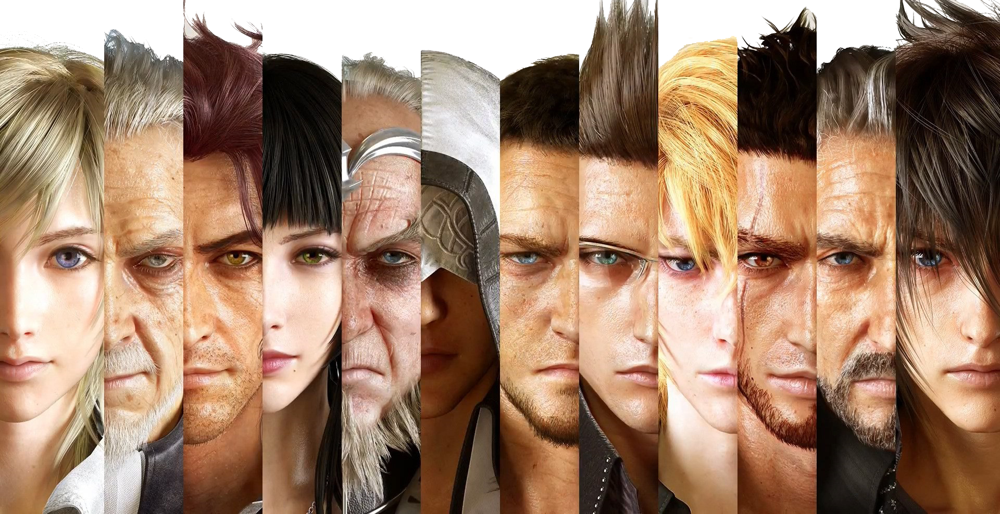

Final Fantasy XV is an action role-playing game developed and published by Square Enix. The fifteenth main installment of the Final Fantasy series, it was released for the PlayStation 4 and Xbox One in 2016, Microsoft Windows in 2018, and Stadia as a launch title in 2019. The game features an open world environment and action-based battle system, incorporating quick-switching weapons, elemental magic, and other features such as vehicle travel and camping. The base campaign was later expanded with downloadable content (DLC), adding further gameplay options such as additional playable characters and multiplayer.
Kisah Final Fantasy XV
Hubungan
Ayah dan Anak
Pertemanan
Kenegaraan

Melindungi
Peninggalan
Orang Tersayang
Kristal
Perjalanan
Dunia Luas
Pencarian Jati Diri
Pertaubatan

Karakter
Terlepas dari karakter-karakternya yang sebagian seolah habis manis sepah dibuang, sebagian lain kurang mendapat pengembangan karakter, ada yang dibuang begitu saja, ada yang muncul selama lima detik lalu mati, dan masalah menyebalkan nan membuat frustasi lainnya, satu hal yang pasti, yakni semuanya terlihat sangat detail dan cakep. Berikut daftar karakter dari yang paling sering muncul:
Noctis Lucis Caelum
Temen penjaganya
Musuhnya
Karakter sampingan
NPC
Lunafreya (serius, ga boong)
Seberapa buruk pun game Final Fantasy, sebab saya sangatlah menyukainya, mau sekurang bagaimanapun dan sebesar manapun potensinya terbuang dalam Final Fantasy 15 ini, membuatnya sebagai game medioker (penilaian ini sudah sangat murah hati), namun esensi Final Fantasy-nya tetap sama, maka dari itu saya masih mencintainya, iya, masih.
Website ini dibuat dengan sepenuh hati dan kerja keras nyata mengikuti UI buatan Steven Chen , sekaligus mempromosikan Final Fantasy 15, terima kasih!